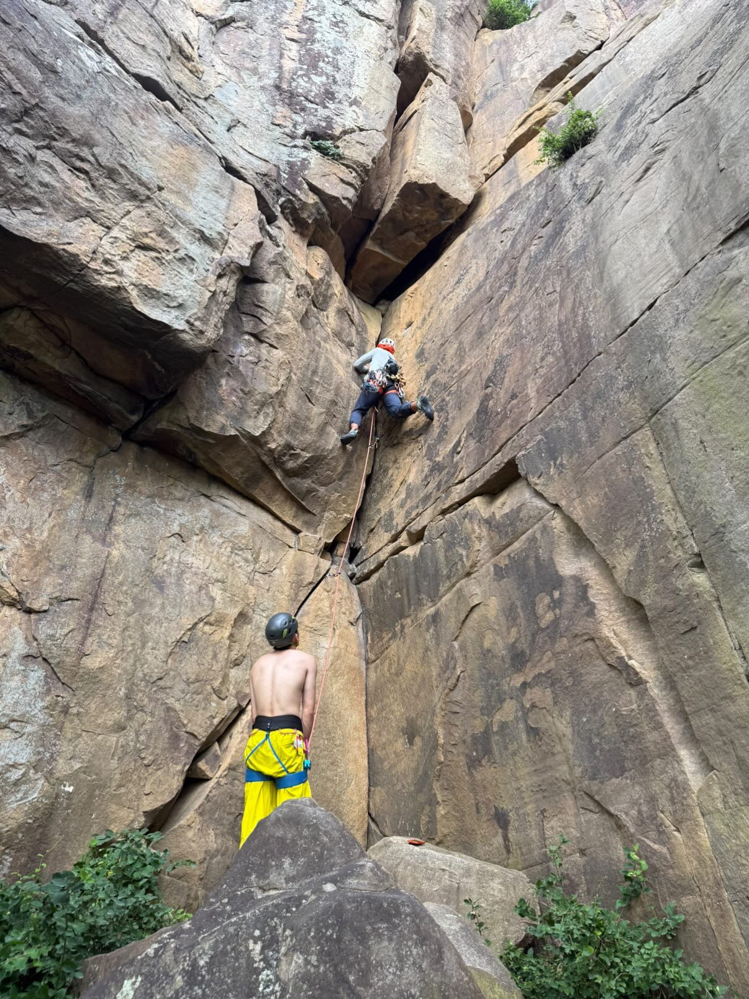
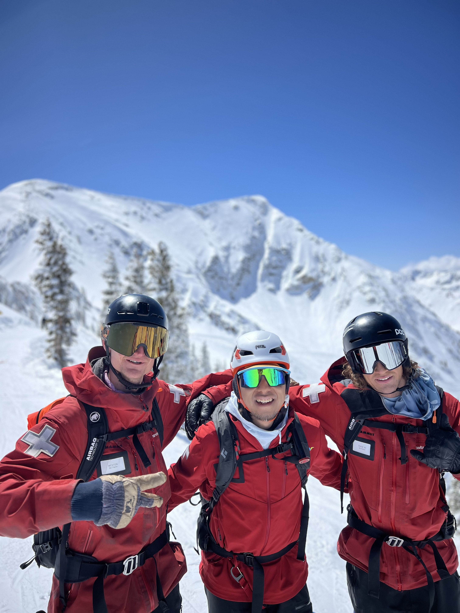
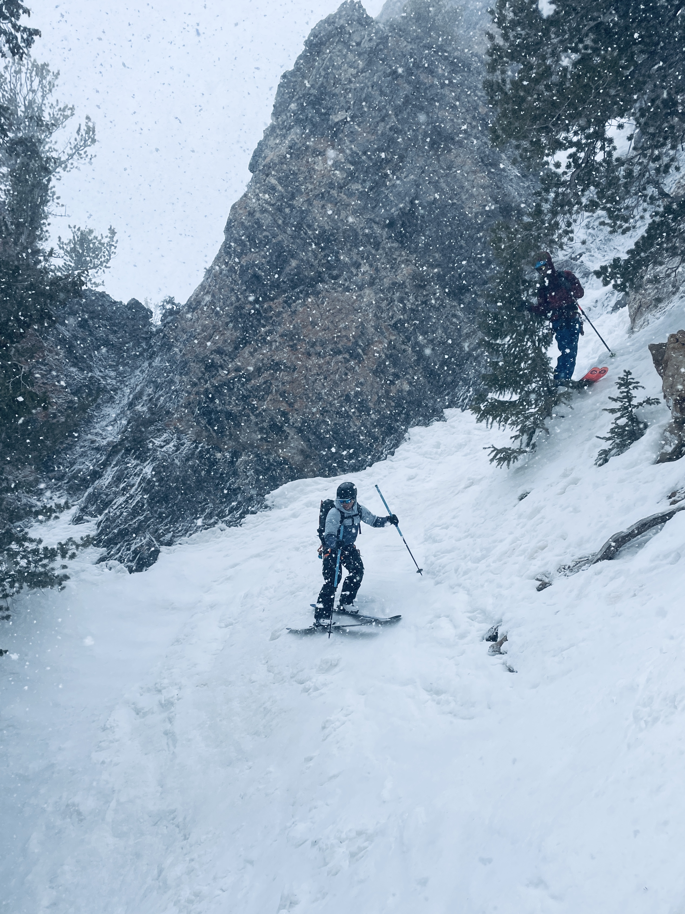
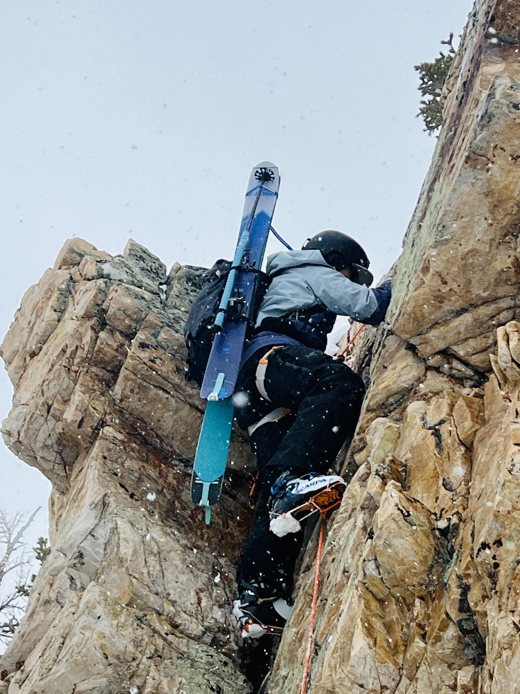
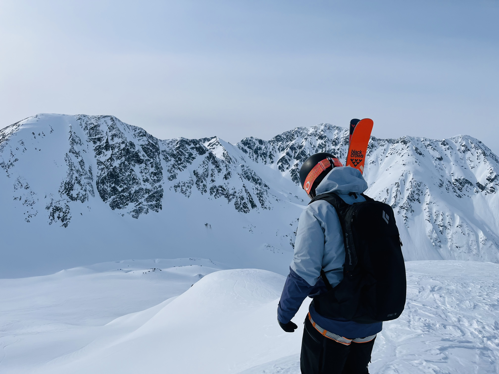
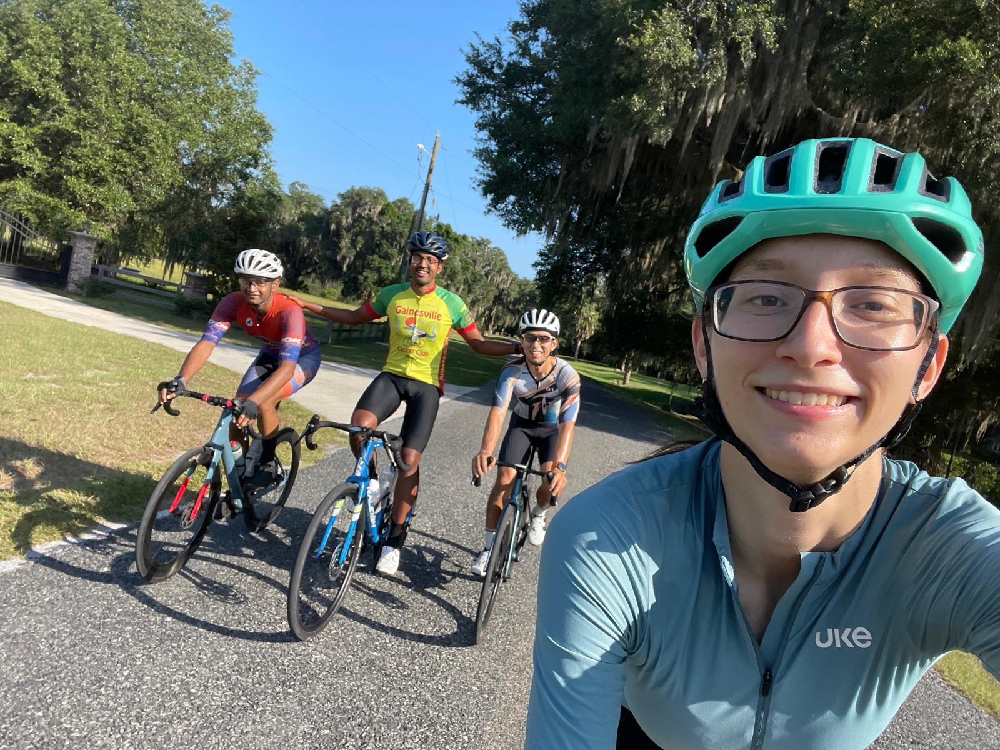

Mountaineering
The mountains are where I spend most of my time outside of research. What began as a curiosity about the outdoors has grown into rock climbing, ski mountaineering, and alpine climbing across the American West — from glaciated volcanoes in the Cascades to desert splitter cracks and steep couloirs in the Wasatch. I care about moving safely and competently in the mountains, so I've invested in professional training: mountain-guiding coursework with the AMGA, professional avalanche education, and wilderness medicine. I'm currently working toward the AMGA Single Pitch Instructor (SPI) and Ski Guide certifications.
When I'm not on rock or snow, I ride — I'm into road and gravel cycling, which keeps the engine going between mountain trips and is its own kind of long-day adventure.
Photos








Certifications
AMGA Alpine Skills Course — Graduate
American Mountain Guides Association
Estes Park / Boulder, CO · Jun 2026. Completed as a prerequisite toward the AMGA Ski Guide Course.
AIARE Pro 1 (Avalanche)
American Institute for Avalanche Research & Education
Snowbird, UT · Mar–Apr 2025. Professional avalanche training meeting A3 guidelines.
Wilderness Medicine
NOLS Wilderness Medicine
CPR / AED & Airway Management and Epinephrine Auto-injector certified · Sep 2024 – Sep 2026.
CASI Level 1 Snowboard Instructor
Canadian Association of Snowboard Instructors
Certified snowboard instructor.
⛰ Ski Mountaineering & Alpine Climbs
| Route | Peak / Area | Elevation | Date |
|---|---|---|---|
| Easton Glacier | Mt. Baker, WA | 7,600’ | Jun 2023 |
| South Side | Mt. Hood, OR | 5,300’ | Jun 2023 |
| West Ridge | Toledo Peak, UT | 2,000’ | Mar 2024 |
| East Face | Mt. Superior, UT | 2,500’ | Mar 2024 |
| Benson & Hedges Couloir | Reed & Benson Ridge, UT | 2,500’ | Mar 2024 |
| Avalanche Gulch | Mt. Shasta, CA | 7,300’ | May 2025 |
| Terminal Cancer Couloir | Ruby Mountains, NV | 2,100’ | Mar 2026 |
🏔 Rock Climbing
| Route | Grade | Type | Location | Date |
|---|---|---|---|---|
| Miss Scarlet (AKA Reunions) | 5.9+ | Sport | Foster Falls, TN | Jul 2026 |
| Miss Prissy | 5.9 | Sport | Foster Falls, TN | Jul 2026 |
| 24 Frames | 5.9 | Sport | Foster Falls, TN | Jul 2026 |
| 5.9 Face | 5.9 | Sport | Golden, CO | Jun 2026 |
| Big Bad Wolf | 5.9 | Sport · 3 pitches | Red Rocks, NV | Nov 2025 |
| S’More | 5.8+ | Trad | Sunset Park, TN | Jul 2026 |
| 5.8 Crack | 5.8- | Trad | Golden, CO | Jun 2026 |
| Slip Stream | 5.7+ | Trad | Sunset North, TN | Jul 2026 |
| You Can’t Email Your Way into Heaven | 5.7 | Trad | Foster Falls, TN | Jul 2026 |
| From Soup to Nuts | 5.7 | Trad | Red Rocks, NV | Nov 2025 |
| One-Ten | 5.6 | Trad | Sunset Park, TN | Jul 2026 |
| Fender Bender | 5.6 | Trad | Red Rocks, NV | Nov 2025 |
| Candy Corner | 5.6 | Trad | Seneca Rocks, WV | Sep 2025 |
| Ecstasy Junior | 5.4 | Trad · 2 pitches | Seneca Rocks, WV | Sep 2025 |